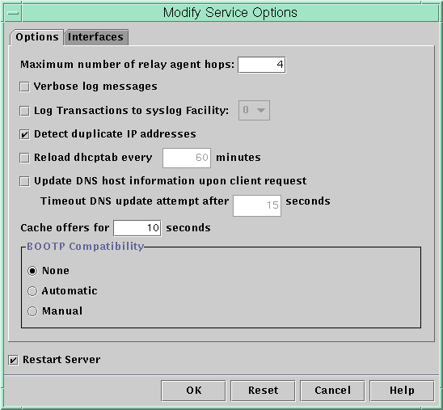

Previous
Previous
DHCP Service and the Service Management Facility
The Service Management Facility (SMF) is described in Chapter 14, "Managing Services (Overview)," in System Administration Guide: Basic Administration. The SMF svcadm command can be used to enable and start the DHCP server, and disable and stop the DHCP server. However, you cannot use SMF commands to modify the DHCP service options that the DHCP tools allow you to set. In particular, service options that are stored in the /etc/dhcp/dhcpsvc.conf file cannot be set by using the SMF tools.
The following table maps DHCP commands to the equivalent SMF commands.
Table 15-1 SMF Commands For DHCP Server Tasks
Task | DHCP Command | SMF Command |
|---|---|---|
Enable DHCP service | dhcpconfig -S -e | svcadm enable svc:/network/dhcp-server |
Disable DHCP service | dhcpconfig -S -d | svcadm disable svc:/network/dhcp-server |
Start DHCP service for current session only | None | svcadm enable -t svc:/network/dhcp-server |
Stop DHCP service for current session | None | svcadm disable -t svc:/network/dhcp-server |
Restart DHCP service | dhcpconfig -S -r | svcadm restart svc:/network/dhcp-server |
Modifying DHCP Service Options (Task Map)
You can change values for some additional features of the DHCP service, which might not have been offered during the initial configuration with DHCP Manager. To change service options, you can use the Modify Service Options dialog box in DHCP Manager. Or you can specify options with the dhcpconfig command.
The following task map shows the tasks related to service options and the procedures to use.
Task | Description | For Instructions |
|---|---|---|
Change logging options. | Enable or disable logging, and select a syslog facility to use for logging DHCP transactions. | How to Generate Verbose DHCP Log Messages (DHCP Manager) How to Generate Verbose DHCP Log Messages (Command Line) How to Enable and Disable DHCP Transaction Logging (DHCP Manager) How to Enable and Disable DHCP Transaction Logging (Command Line) |
Change DNS update options. | Enable or disable server's capability to dynamically add DNS entries for clients that supply a host name. Determine the maximum time the server should spend attempting to update DNS. | |
Enable or disable duplicate IP address detection. | Enable or disable the DHCP server's capability to determine that an IP address is not already in use before offering the address to a client. | |
Change options for the DHCP server's reading of configuration information. | Enable or disable the automatic reading of dhcptab at specified intervals, or change the interval between reads. | |
Change the number of relay agent hops. | Increase or decrease the number of networks a request can travel through before being dropped by the DHCP daemon. | |
Change the length of time an IP address offer is cached. | Increase or decrease the number of seconds that the DHCP service reserves an offered IP address before offering the address to a new client. |
The following figure shows DHCP Manager's Modify Service Options dialog box.
Figure 15-3 Modify Service Options Dialog Box in DHCP Manager
Changing DHCP Logging Options
The DHCP service can log DHCP service messages and DHCP transactions to syslog. See the syslogd(1M) and syslog.conf(4) man pages for more information about syslog.
DHCP service messages logged to syslog include the following:
Error messages, which notify you of conditions that prevent the DHCP service from fulfilling a request by a client or by you.
Warnings and notices, which notify you of conditions that are abnormal, but do not prevent the DHCP service from fulfilling a request.
You can increase the amount of information that is reported by using the verbose option for the DHCP daemon. Verbose message output can help you troubleshoot DHCP problems. See How to Generate Verbose DHCP Log Messages (DHCP Manager).
Another useful troubleshooting technique is transaction logging. Transactions provide information about every interchange between a DHCP server or BOOTP relay and clients. DHCP transactions include the following message types:
ASSIGN - IP address assignment
ACK - Server acknowledges that the client accepts the offered IP address, and sends configuration parameters
EXTEND - Lease extension
RELEASE - IP address release
DECLINE - Client is declining address assignment
INFORM - Client is requesting network configuration parameters but not an IP address
NAK - Server does not acknowledge a client's request to use a previously used IP address
ICMP_ECHO - Server detects potential IP address is already in use by another host
BOOTP relay transactions include the following message types:
RELAY-CLNT - Message is being relayed from the DHCP client to a DHCP server
RELAY-SRVR - Message is being relayed from the DHCP server to the DHCP client
DHCP transaction logging is disabled by default. When enabled, DHCP transaction logging uses the local0 facility in syslog by default. DHCP transaction messages are generated with a syslog severity level of notice. This security level causes DHCP transactions to be logged to the file where other system notices are logged. However, because the local facility is used, the DHCP transaction messages can be logged separately from other notices. To log the transaction messages separately, you must edit the syslog.conf file to specify a separate log file. See the syslog.conf(4) man page for more information about the syslog.conf file.
You can disable or enable transaction logging, and you can specify a different syslog facility, from local0 through local7, as explained in How to Enable and Disable DHCP Transaction Logging (DHCP Manager). In the server system's syslog.conf file, you can also instruct syslogd to store the DHCP transaction messages in a separate file. See How to Log DHCP Transactions to a Separate syslog File for more information.
 How to Generate Verbose DHCP Log Messages
(DHCP Manager)
How to Generate Verbose DHCP Log Messages
(DHCP Manager)
In DHCP Manager, choose Modify from the Service menu.
See How to Start and Stop DHCP Manager for information about DHCP Manager.
The Modify Service Options dialog box opens and displays the Options tab. See Figure 15-3.
Select Verbose Log Messages.
Select Restart Server.
The Restart Server option is near the bottom of the dialog box.
Click OK.
The daemon runs in verbose mode for this session and each subsequent session until you reset this option. Verbose mode can reduce daemon efficiency because of the time that is taken to display messages.
How to Generate Verbose DHCP Log Messages
(Command Line)
Become superuser or assume a role or user name that is assigned to the DHCP Management profile.
For more information about the DHCP Management profile, see Setting Up User Access to DHCP Commands.
Roles contain authorizations and privileged commands. For more information about roles, see "Configuring RBAC (Task Map)" in System Administration Guide: Security Services.
Type the following command to set verbose mode:
# /usr/sbin/dhcpconfig -P VERBOSE=true
The next time the DHCP server starts, the server runs in verbose mode until you turn off verbose mode.
To turn off verbose mode, type the following command:
# /usr/sbin/dhcpconfig -P VERBOSE=
This command sets the VERBOSE keyword to no value, which causes the keyword to be removed from the server's configuration file.
Verbose mode can reduce daemon efficiency because of the time that is taken to display messages.